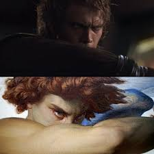
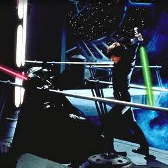

The Role of a Villain
The role of the villain varies and has many different ways to be played. The villain could be a force like the Witness in Destiny 2. Or it could be a physical character like Eren from Attack on Titan. It could also even be the main character. Or it may not even be a typical villain at all, like Serie from Frieren: Beyond Journeys End. But what is a villain? The villain that I see is the character or thing everyone wishes to defeat or have some end goal towards. That final boss in their story. Yet the villain isn't always just a villain for fun; there could be a lot of deep-rooted traumas and issues leading to their downfall.
Anakin Skywalker, a famous Jedi who eventually turns to the dark side, is a key figure in the Hall of Villains. He plays off as a cool and stubborn character whos set in his ways and has determination like no other, but that may not always be a good thing.
After a series of harmful and hurtful events, we see Anakin slowly grow with hatred and anger towards his own people. This is seen in many different scenes of other movies, such as Anakin's famous line of "I hate you!" in one of his movies. We even get a close-up shot of his eyes that is a near replica of the eyes of The Fallen Angel, a painting by Alexander Cabanel.
Yet we see these changes, and we empathize with the villain; we may not agree with what they do, but we understand that there's a reason behind them. We know that Anakin changed to the dark side because he felt it out of necessity, not out of wanting.
Back from the Dead
We are now in the trilogy of Luke's lifetime. We have an understanding of Luke's life, and we know that Darth Vader is his big villain and the final boss of his story. But we learn later on that Vader is not only Lukes Villian, but also his father.
Yet as we progress through the movie, we watch this transition of a ruthless leader to a man of reason and understanding. Such as the point where, instead of killing Luke, he decides to cut off his hand instead. And Luke recognizes that, Luke sees Vader as the audience does. A man who is still mixed on his feelings towards the dark side. However, unlike us, Luke can choose to do something about it. And he does. We hear and see Vader's son understand and acknowledge his father for the man he knows he can be, even if it's at the last minute.
In Vader's final moments, he decides that he is no longer part of the Imperial force, and he frees both himself and his son from Palpatine's grasp. This final turning point is the death of Darth Vader and the rebirth of Anakin Skywalker, the name once dreaded by Vader. Yet we see Anakin fighting for his life right after this final act, as a father protecting his son.
Anakin was lying dormant for years as a vessel for Darth Vader that Emperor Palpatine used as a puppet; Luke was just the one to cut those marionette strings. In the final interaction between Luke and Anakin, we see Anakin looking at his son one last time before he passes. And although we watch Anakin die, that is also the final breath of Vader, and Anakin reborn as a Jedi Force.